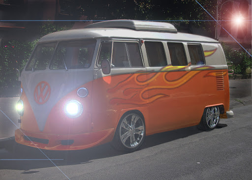

5 Mercedes Citaro
Safety.
Mercedes-Benz is pursuing the vision of accident-free driving. The Mercedes-Benz integral safety
concept makes an important contribution towards achieving this aim.
Comfort & Design.
The attractive Citaro doesn't just have particularly attractive, outwardly appreciable charm. Its
inner values are also especially convincing. That's because, here, every single centimetre was well
thought-out.
Jhonnny likes to drive them because they are so long.

One VW Bully-bus
History.
Known from ancient times, the Bully-bus has been a staple in every bus-companys arsenal.
Design and comfort.
Having comfortabel seats and a 4 cylinder fuel motor its the best weapon
Mia can muster up to beat our
competition